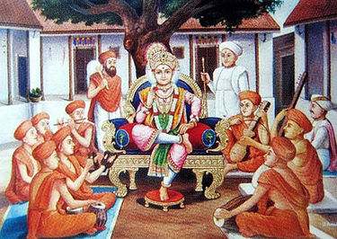
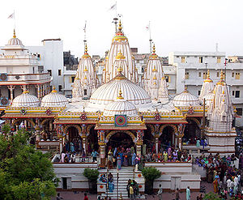

Swaminarayan encouraged his followers to combine devotion and dharma to lead a pious life. Using Hindu texts and rituals to form the base of his organisation, Swaminarayan founded what in later centuries would become a global organisation with strong Gujarati roots.[49] He was particularly strict on the separation of sexes in temples.[50] Swaminarayan was against the consumption of meat, alcohol or drugs, adultery, suicide, animal sacrifices, criminal activities and the appeasement of ghosts and tantric rituals.[51][52][53][54] Alcohol consumption was forbidden by him even for medicinal purposes.[55] Many of his followers took vows before becoming his disciple. He stated that four elements need to be conquered for ultimate salvation: dharma, bhakti (devotion), gnana (knowledge) and vairagya (detachment).[4] Doctrinally, Swaminarayan was close to eleventh century philosopher Ramanuja and was critical of Adi Shankara's concept of Advaita, or monistic non-dualism. Swaminarayan's ontology maintained that the supreme being is not formless and that God always has a divine form.[56]
Swaminarayan strived to maintain good relationships with people of other religions, sometimes meeting prominent leaders. His followers cut across religious boundaries, including people of Muslim and Parsi backgrounds.[28][57] Swaminarayan's personal attendants included Khoja Muslims.[28] In Kathiawad, many Muslims wore kanthi necklaces given by Swaminarayan.[58] He also had a meeting with Reginald Heber, Lord Bishop of Calcutta and a leader of Christians in India at the time.[45] Bishop Heber mentions in his account of the meeting that about two hundred disciples of Swaminarayan accompanied him as his bodyguards mounted on horses and carrying Matchlocks and swords. Bishop Heber himself had about a hundred horse guards accompanying him (fifty horses and fifty muskets) and mentioned that it was humiliating for him to see two religious leaders meeting at the head of two small armies, his being the smaller contingent.[59][60] As a result of the meeting, both leaders gained mutual respect for one another.[60] Swaminarayan enjoyed a good relationship with the government of the ruling East India Company. The first temple he built, in Ahmedabad, was built on 5,000 acres (20 km2) of land given by the company government. The company officers gave it a 101 gun salute when it was opened.[61][62] It was in an 1825 meeting with Reginald Heber that Swaminarayan is said to have intimated that he was a manifestation of Krishna.[45] In 1830, Swaminarayan had a meeting with Sir John Malcolm, Governor of Bombay (1827 to 1830). According to Malcolm, Swaminarayan had helped bring some stability to a lawless region.[63] During the meeting with Malcolm, Swaminarayan gave him a copy of the Shikshapatri. This copy of the Shikshapatri is currently housed at the Bodleian Library at University of Oxford.[64]
Swaminarayan ordered the construction of several Hindu temples and he had built six huge temples by himself and installed the idols of various deities such as Radha Krishna, Nara-Narayana, Laksmi Narayana, Gopinath, Radha Ramana, and Madanamohana. The images in the temples built by Swaminarayan provide evidence of the priority of Krishna.[45]: 81 [65] Disciples of Swaminarayan composed devotional poems which are widely sung by the tradition during festivals.[66][67] Swaminarayan introduced fasting and devotion among followers.[68] He conducted the festivals of Vasant Panchami, Holi, and Janmashtami with organization of the traditional folk dance raas.[28] The first temple Swaminarayan constructed was in Ahmedabad in 1822, with the land for construction given by the Company Government.[69][61] Following a request of devotees from Bhuj, Swaminarayan asked his follower Vaishnavananand to build a temple there. Construction commenced in 1822, and the temple was built within a year.[69] A temple in Vadtal followed in 1824,[69] a temple in Dholera in 1826,[69] a temple in Junagadh in 1828[69] and a temple in Gadhada, also in 1828.[69] By the time of his death, Swaminarayan had also ordered construction of temples in Muli, Dholka and Jetalpur.[62] From early on, ascetics have played a major role in the Swaminarayan sect. They contribute towards growth and development of the movement, encouraging people to follow a pious and religious life.[70] Tradition maintains that Swaminarayan initiated 500 ascetics as paramahamsas in a single night. Paramahamsa is a title of honour sometimes applied to Hindu spiritual teachers who are regarded as having attained enlightenment. Paramahamsas were the highest order of sannyasi in the sect.[71] Prominent paramahamsas included Muktanand Swami, Gopalanand Swami, Brahmanand Swami, Gunatitanand Swami, Premanand Swami, Nishkulanand Swami, and Nityanand Swami.[72]